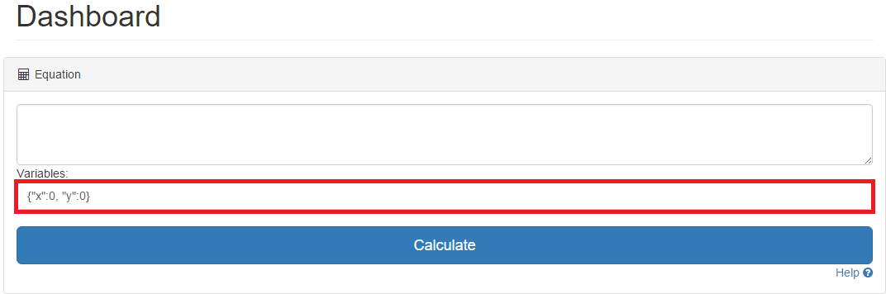
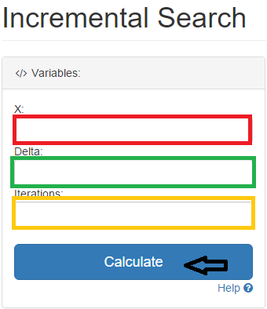
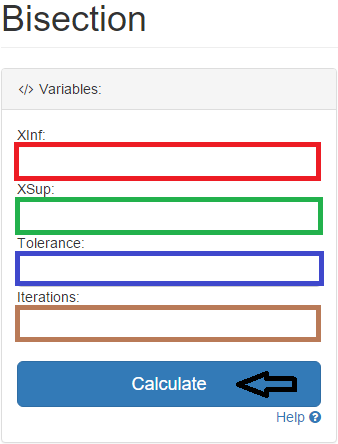
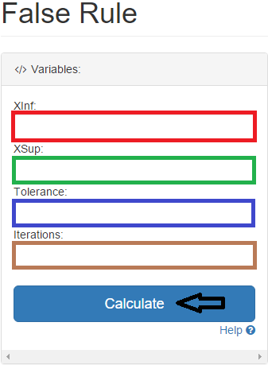
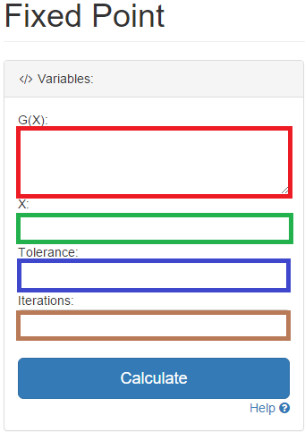
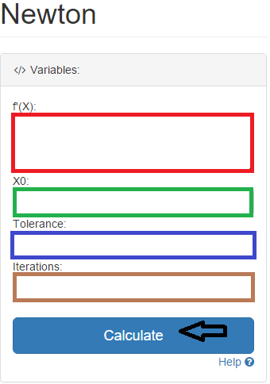
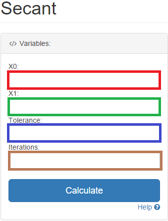

2.Escribe el valor de la variable y oprime "Calculate"

Incremental Search - HELP
1.Escribe un valor inicial,un delta (diferente de 0), un numero de iteraciones (mayor que 0) y luego presiona Calculate. Este método retorna un intervalo donde puede haber una raíz o un fallo

Bisection - HELP
Escribe un límite inferior, un límite superior, una tolerancia y un número de iteraciones (Mayor que 0) y luego oprime "Calculate". Este método retorna una raíz o un fallo

False Rule - HELP
Escribe un límite inferior, un límite superior, una tolerancia y un número de iteraciones (Mayor que 0) y luego oprime "Calculate" Este método retorna una raíz o un fallo

Fixed Point - HELP
Escribe la ecuación auxiliar, un punto inicial, una tolerancia y un número de iteraciones (mayor que 0) y luego presiona "Calculate". Retorna una raiz basado en la ecuación auxiliar

Newton - HELP
Escribe la derivada de la función, un valor inicial, una tolerancia, un número de iteraciones mayor que 0 y luego presiona "Calculate". Este método retorna una raíz o un fallo

Secant - HELP
Escribe el primer punto donde se evaluará la función luego el segundo, la tolerancia y un número de iteraciones mayor a 0 y luego oprime "Calculate". Este método retorna una raíz o un fallo

Multiple Roots - HELP
Escriba la primera y segunda derivada un punto inicial, una tolerancia y un numero mayor que 0 de iteraciones luego oprime "Calculate". Retorna una raíz múltiple o un fallo